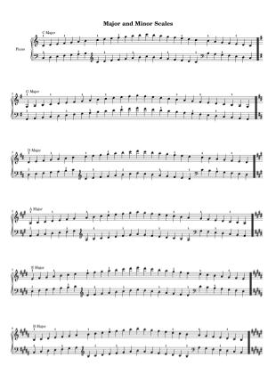
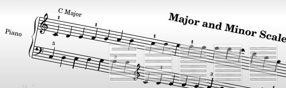

Learning the major and minor scales for piano are one of the fundamental skills in a musician's education. This pack includes ten pages of scales with the following features.
- Scales include major, harmonic minor, and melodic minor varieties.
- Scales ascend and descend two octaves.
- Scales include all keys, beginning at C major, followed by G major, D major, etc until F sharp major, then switches over to D flat major, and descends in flats until F major.
- These scales are optimised for piano, with two staves, one for the left hand and one for the right. Fingering numbers are noted, but only where fingering changes occur, instead of above every single note, which is unnecessarily ugly.
- All PDFs available in A4 and letter paper sizes
A sample page is shown below:

The sheet has no copyright or attribution text that might get in the way of professionalism when presenting to students. The sheet is created using LilyPond, which is quite possibly the world's best music engraving software.
